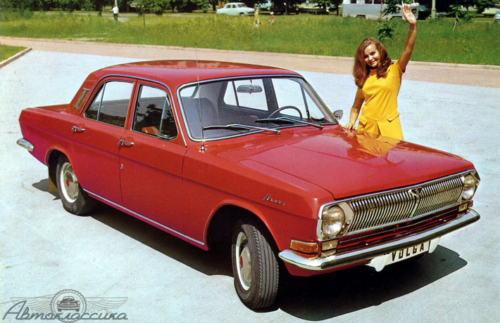

Автомобиль ГАЗ-24 «Волга»

ГАЗ-24 «Волга» — советский автомобиль среднего класса, серийно производившийся на Горьковском автомобильном заводе с
1968 по 1986 год.
Модель пришла на смену модели ГАЗ-21 «Волга», фактически став последним принципиально новым отечественным
автомобилем данного класса ГАЗ,
кузов которого послужил основой для модернизированной и рестайлинговой модели 3102.
Технические характеристики
| Год выпуска |
1959-1978 гг. |
| Название |
ГАЗ-24 «Волга» |
| Год выпуска |
1970-1978 гг |
| Кузов |
Несущий цельнометаллический седан |
| Вместительность |
4 пассажира, водитель, 50 кг багажа |
| Двигатель |
Карбюраторный, 4-цилиндровый 24-Д |
| Объем двигателя |
2445 см.3 |
| Диаметр цилиндра |
92 см |
| Степень сжатия |
8,2 |
| Макс. мощность |
69,9 кВт / 95 л.с. |
| Вид топлива |
Аи-93 |
| Средний расход топлива |
10-13 л/100 км |
| Максимальная скорость |
145 км/ч |
| Время разгона до 100 км/ч |
19 сек |
| Сцепление |
Сухое, однодисковое с гидравлическим приводом |
| Коробка передач |
Механическая, 4-ступенчатая, оснащена синхронизаторами |
| Подвеска, передняя/задняя |
Независимая/рессорная |
| Амортизаторы |
Телескопические, гидравлические с 2-сторонним действием |
| Карбюратор |
2-камерный с падающим потоком |
| Рулевой механизм |
Глобоидный с 3-гребневым роликом и передаточным числом 19,1 |
| Рулевой вал |
Оснащен травмобезопасной муфтой и противоугонным устройством (блокиратором) |
| Тормозная система |
Барабанного типа с гидравлическим приводом и индикатором об отказе одного из контуров |
| Батарея аккумулятора |
6СТ-60-ЭМ |
Варианты исполнения
Серийные
- 1969-77 ГАЗ-24 — базовый седан первой серии. Двигатель 24Д (95 л.с., АИ-93) либо 24-01 (85 л.с.,
А-76);
комбинированная обивка сидений, спереди — раскладной диван с откидным подлокотником и выемным третьим
местом;
приемник и антенна с электроприводом в стандартной комплектации; на протяжении первых лет выпуска
многократно
модернизировался как по внешности, так и технически.
- 1971-77 ГАЗ-24-01 — седан-такси первой серии. Двигатель только 24-01 (85 л.с., А-76), обивка сидений
легкомоющимся кожзаменителем, спереди — два раздельных сидения без подлокотника и третьего места, сзади —
нет
подлокотника в спинке дивана, нет приемника и антенны, таксометр под панелью приборов, задняя левая дверь не
открывается, окраска как правило желто-зеленым фисташковым цветом (другие цвета по заказу автокомбинатов), с
черными «шашечками» на бортах и зелёным опознавательным огнём за лобовым стеклом.
- 1973-? ГАЗ-24-54 — экспортный праворульный седан. Правый руль, двигатель 24Д.
- 1973-88 ГАЗ-24-24 — малосерийная быстроходная версия ГАЗ-24 I и II серий. Двигатель ЗМЗ-2424 — V8,
5,53
литра, 195 л.с., АКПП-3, спецоборудование, в остальном как базовый седан. Внеконвейерной сборки.
- 1981 (?) -88 (?) ГАЗ-24-25 — быстроходный седан с экранированным электрооборудованием.
- 1983 (?) -88 (?) ГАЗ-24-26 — быстроходный седан со спецоборудованием.
- 1985-90 ГАЗ-24-27 — газобалонный. Больше информации нет. Видимо, к предыдущим трём модификациям
отношения
не имел. Выпущено по имеющейся информации около 1000 штук.
- 1976-77 ГАЗ-24-76 — экспортный седан с дизельным двигателем Peugeot для поставок в Бельгию.
Поставлялся из СССР в виде машинокомплекта и оборудовался дизелями уже в Бельгии. По информации из
достаточно
надежного источника, вся партия 1976-77 годов была цвета «морская волна».
- 1977-85 ГАЗ-24 — базовый седан второй серии. Как у базового седана первой серии, но спереди
раздельные
сидения без третьего места и подлокотника, другая обивка сидений (верх тканевый, боковины виниловые).
- 1977-85 ГАЗ-24-01 — седан-такси второй серии. Особенности те же, что у такси первой серии. Ближе к
восьмидесятым годам окраска такси стала, как правило, жёлто-лимонной. Тогда же введён опознавательный фонарь
ФП-147 на крыше.
- 1977-85 ГАЗ-24-07 — газобалонный седан-такси II серии. С газовым оборудованием. Двигатель
конвертирован
для работы на газовом топливе, установлены баллон для газа, испаритель и редуктор.
- 197?-? ГАЗ-24-50 — экспортный седан для стран с тропическим климатом. По словам владельца — другой
термостат в двигателе, обивка только кожзамом, другие шины и с завода другое масло, в остальном обычный
экспортный седан.
- 1978 ГАЗ-24-56 — экспортный праворульный седан второй серии с дизельным двигателем Indenor XDP
4.90. То же, что и обычный седан, но с дизелем и правым рулем (выпущено менее 1000 шт.)
- 1985 ГАЗ-24М — переходный вариант от ГАЗ-24 к 24-10. Неофициальное наименование, официально машины
шли
либо как 24, либо как 24-10. Тем не менее, упорно продолжает поступать информация о наличии машин с
обозначением именно 24М на табличке, в том числе и от представляющихся владельцами. Представители завода
наличие их по-прежнему отрицают.
- 1985/86-92 ГАЗ-24-10 — базовый седан ГАЗ-24-10. Двигатель ЗМЗ-402.10 (100 л.с., АИ-93) или 4021.10
(90
л.с., А-76).
- 1985/86-92 ГАЗ-24-11 — седан-такси на базе 24-10. Двигатель ЗМЗ-4021 (90 л.с., А-76).
- 1985/86-92 ГАЗ-24-17 — газобалонный седан-такси. Газобалонное такси на базе ГАЗ-24-10. Двигатель
конвертирован для работы на газовом топливе, установлены баллон для газа, испаритель и редуктор.
-
">1987-93 ГАЗ-24-34 — малосерийная быстроходная версия ГАЗ-24-10 (см. ГАЗ-24-24). Мотор; судя
по
всему также обозначался как 24-24, но поздней версии, отличающийся закрытой вентиляцией картера и другими
деталями.
Теоретически, мог ставиться и ЗМЗ-505, но вообще он типичен для машин на базе 3102 (31013). Резервная система
зажигания с переключением из салона. Тормоза спереди дисковые (как минимум с начала 1990-х гг.), колёсные диски
от
ГАЗ-3102. Собирались вне конвейера.
- 1972-77 ГАЗ-24-02 — базовый универсал первой серии. См. базовый седан. Три ряда сидений, два задних
складные, при складывании образуют ровную площадку для груза.
- 1973-77 ГАЗ-24-04 — грузопассажирское такси первой серии. См. седан-такси.
- 1975-77 ГАЗ-24-03 — медицинский универсал первой серии. Перегородка в кузове, места для носилок
сзади,
матовые задние стекла со знаком Красного Креста, опознавательный огонь с красным крестом на крыше,
фара-искатель
на правом крыле (вместо антенны), спецокраска. Двигатель 24Д (АИ-93) — 95 л.с.
- 1976-77 ГАЗ-24-77 — экспортный универсал с дизельным двигателем Peugeot для поставок в
Бельгию.
Поставлялся из СССР в виде машинокомплекта и оборудовался дизелями уже в Бельгии. По информации из
достаточно
надежного источника, вся партия 1976-77 годов была цвета «морская волна». Система тормозов аналогична
дизельному
седану. Вместе с аналогичными седанами ГАЗ-24-76 было выпущено около 8 000 таких автомобилей.
- 197?-? ГАЗ-24-52 — экспортный универсал для стран с тропическим климатом. Из отличий,
резинотехнические
изделия, стойкие к тропическому климату, другой термостат в двигателе, обивка только кожзамом, другие шины и
с
завода другое масло, в остальном обычный экспортный универсал.
- 1977-87 ГАЗ-24-02 — базовый универсал второй серии. См. универсал первой серии.
- 1977-87 ГАЗ-24-03 — медицинский универсал второй серии. См. медицинский универсал первой серии.
- 1977-87 ГАЗ-24-04 — грузопассажирское такси второй серии. См. грузопассажирское такси первой серии.
- 1987-92 ГАЗ-24-12 — базовый универсал на базе ГАЗ-24-10. См. базовый ГАЗ-24-10.
- 1987-92 ГАЗ-24-13 — медицинский универсал на базе ГАЗ-24-12. См. медицинский универсал первой-второй
серии. Двигатель 402.10, 100 л.с. (АИ-93)
Несерийные и опытные
- 1964...1966 (прототипы): ГАЗ-24-14 — прототип с V6 модели 24-14
- ? (прототипы): ГАЗ-24-18 — прототип с V6 модели 24-18
- ок. 1972...73 ГАЗ-24-Fiat — попытка создания люксового варианта «Волги» для экспортирования при участии
иностранного партнёра, с установкой двигателя V6 и салона от Fiat 130. Оказалась не востребована ввиду
бензинового кризиса 1970-х годов; даже сам Fiat 130 по той же самой
причине
оказался в сущности провальной моделью; за 8 лет выпуска удалось продать лишь порядка 15 тыс. штук.
Что уж говорить о «Волге» с тем же двигателем.
- 1973...74 ГАЗ-24-95 — опытный седан с колесной формулой 4×4; несмотря нас сходство по ряду
конструктивных
решений с ГАЗ-69 и УАЗ, машина имела в основном оригинальные агрегаты; штатную 24-ртую коробку
передач с более коротким хвостовиком, раздаточную коробку на основе УАЗовской, расположенную отдельно от КПП
на
перекинутой между лонжеронами поперечине, и переделанные штатные мосты с кулачковой блокировкой
дифференциала
(по большинству сообщений, выпущено 5 экземпляров, два из которых эксплуатировались лично Л. И. Брежневым в
качестве транспорта для охоты в охотничьем хозяйстве Завидово).
- 1973 ГАЗ-24-BMW — опытный седан с рядным шестицилиндровым двигателем BMW
- 1975 ГАЗ-24-91 — модификация с рядным шестицилиндровым двигателем Mercedes-Benz. В серию не пошла.
- ГАЗ-24-29 — также упоминается в качестве модификации с двигателем Mercedes-Benz.
- 1978 ГАЗ-24-78 — фургон на базе универсала. В серию не пошел.
- 1978 ГАЗ-24-P.R.V. — опытный ГАЗ-24 с двигателем V6 P.R.V. (Пежо-Рено-Вольво)
- 1984 ГАЗ-24-Ford — опытный ГАЗ-24 с двигателем V6 от европейского Ford Granada (2,8 литра),
выпускался
малой серией.
- 1991 ГАЗ-24-1301 — заводская разработка пикапа, два места, 500 кг в кузове.